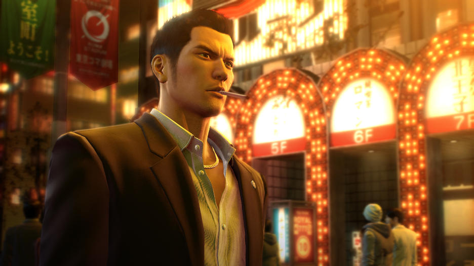
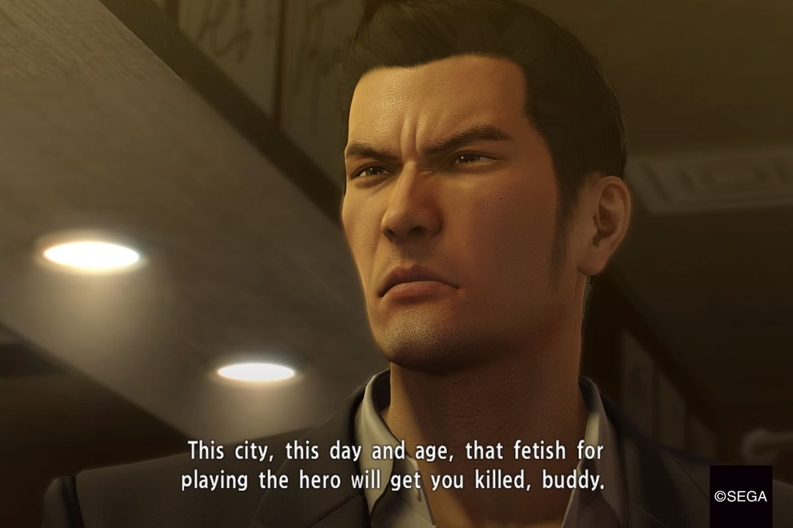
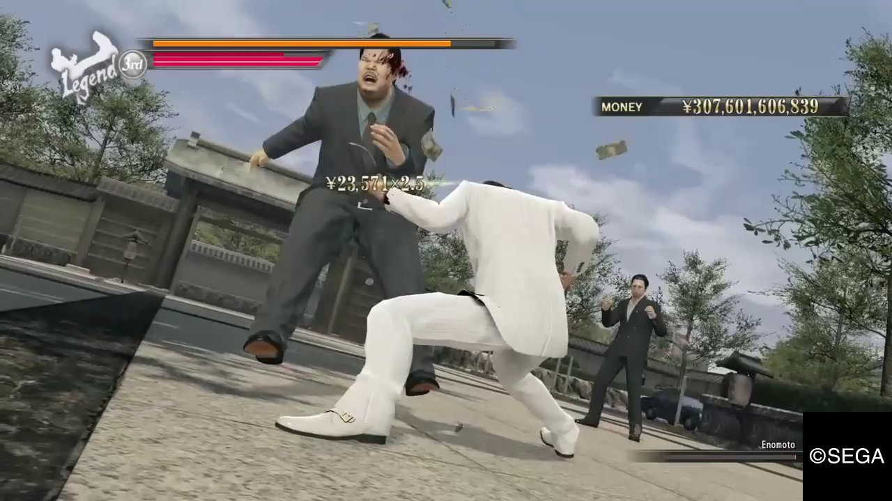
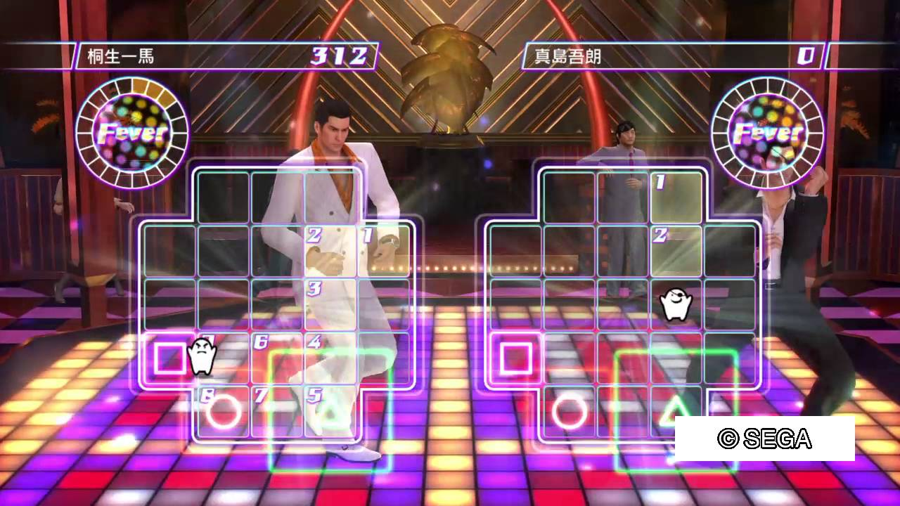

Yes, this game has been out for some time. Better late that never I suppose. I was always interested in the Yakuza franchise. I thought I missed my window when the PS4 was here and I had gave away my PS3. To my joy when I heard they weren't only gonna remake all the games for PS4 but add a prequel I was ecstatic. How's it like walking in the shoes of an up and coming Yakuza gang member in the 80's? Exactly how many side quest are there? Kazuma Kiryu a super Saiyan? Find out on the next exciting episode of Raven Review Z!
Graphics
This game looks pretty damn good. It's not like your gonna see every hair follicle if you zoom in or anything. Just that this game has so much stuff to do and the graphics look good throughout all of it. The city is filled with bright lights and sounds and there are tons of people, holligans, gang members, etc walking about. It's truly a sight to see.
Story
This game has 2 playable characters. You start out as Kazuma Kiryu the low rank muscle of the Tojo clans Dojima family.An orphan who was raised in a place called The Sunflower orphanage. The orphanage was founded by a Yakuza named Shintaru Kazama who Kiryu looked up to as a father figure and mentor. Once old enough Kiryu joined the Yakuza and well, even before his back tattoo was finished he found himself is a world of trouble. He was framed for murder, had to leave his Yakuza family *who is now trying to kill him* to go clear his name, and to solve the mystery of why this is all happening.
The flip side of this you play as Goro Majima.  A disgraced member of the Tojo clan Yakuza who is trying to work his way back into the family. He is placed as the manager of a cabaret club and must work like a dog to get his way back in the clan. He is soon ordered to kill a woman named Mokato Makimura, but desires to protect her putting him at odds with the clan he do desperately wants to get back into. Throughout these two character plots their story's intertwine into a larger plot of betrayal, blackmail, violence, and murder. All in the life of a Yakuza I suppose.
A disgraced member of the Tojo clan Yakuza who is trying to work his way back into the family. He is placed as the manager of a cabaret club and must work like a dog to get his way back in the clan. He is soon ordered to kill a woman named Mokato Makimura, but desires to protect her putting him at odds with the clan he do desperately wants to get back into. Throughout these two character plots their story's intertwine into a larger plot of betrayal, blackmail, violence, and murder. All in the life of a Yakuza I suppose.
Gameplay
This game is seriously fun. There's so much to do I don't even know where to begin. At it's core it's a 3D beat em up. In the story missions for the most part your on a set path. You fight enemies that show up then off to the next place, beat up the enemies in your way rinse and repeat till you reach the epic boss fight. The combat is so fun that it never gets boring. With each character you get 3 styles which you can switch to on the fly. There are basically combos and a throw, but the real spectacle is the Heat actions. As you fight you build up your heat meter. It has 3 bars. You can use different heat actions spending one, two, or all 3 bars. Heat actions are cinematic finishing moves some of which are QuickTime events. I must say they are brutally awesome. Each style has different finishers so the fights never look the same. It like playing in your very own action movie. Especially during the boss fights.
As I mentioned before there are 3 styles of fighting you can switch on the fly during combat. Each style has its own tree of skills. From unlocking new heat actions, increasing health, increasing attack, adding counters as well as other perks. It's all truly massive. Each new skill cost money which you get from completing story missions, fighting guys in the street, and minigames.
Outside of the story missions you run around a 1980s version of Kamurocho and Sontenburi respectfully. There is so much you can do It's almost sickening. From going on dates, going to batting cages, arcades, and a plethora of other mini games. Not to mention the list of accomplishments you can try to complete. I played this game well 117 hrs and I'm only 46% done on the completion list.
Final thoughts
I know you probably read this and might be intimated. Don't be, if you ever had an interest in the Yakuza games this is a great place to start. Being that this is a prequel to the series. Plus the story is really, really good. There's action, drama, and even deaths of several characters which you don't really see a lot of in video games these days. Not to mention this game is a blast to play even after you beat the main story. And if you want to tackle the game again there's a new game + mode.